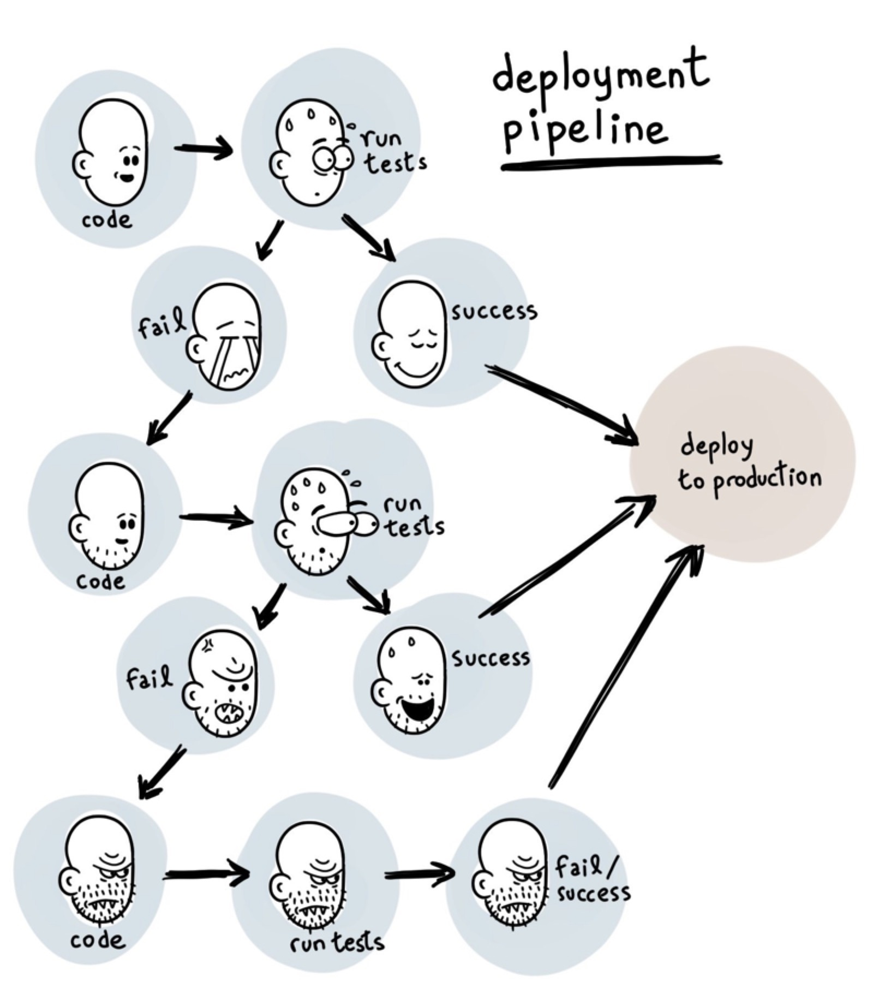

云原生应用之路——从Kubernetes到Cloud Native
从Kubernetes到Cloud Native——云原生应用之路，这是我最近在 ArchSummit2017北京站 和 数人云&TalkingData合办的Service Mesh is coming meetup 中分享的话题。
本文简要介绍了容器技术发展的路径，为何Kubernetes的出现是容器技术发展到这一步的必然选择，而为何Kubernetes又将成为云原生应用的基石。
我的分享按照这样的主线展开：容器->Kubernetes->微服务->Cloud Native（云原生）->Service Mesh（服务网格）->使用场景->Open Source（开源）。
容器
容器——Cloud Native的基石
容器最初是通过开发者工具而流行，可以使用它来做隔离的开发测试环境和持续集成环境，这些都是因为容器轻量级，易于配置和使用带来的优势，docker和docker-compose这样的工具极大的方便的了应用开发环境的搭建，开发者就像是化学家一样在其中小心翼翼的进行各种调试和开发。
随着容器的在开发者中的普及，已经大家对CI流程的熟悉，容器周边的各种工具蓬勃发展，俨然形成了一个小生态，在2016年达到顶峰，下面这张是我画的容器生态图：

该生态涵盖了容器应用中从镜像仓库、服务编排、安全管理、持续集成与发布、存储和网络管理等各个方面，随着在单主机中运行容器的成熟，集群管理和容器编排成为容器技术亟待解决的问题。譬如化学家在实验室中研究出来的新产品，如何推向市场，进行大规模生产，成了新的议题。
为什么使用Kubernetes
Kubernetes——让容器应用进入大规模工业生产。
Kubernetes是容器编排系统的事实标准
在单机上运行容器，无法发挥它的最大效能，只有形成集群，才能最大程度发挥容器的良好隔离、资源分配与编排管理的优势，而对于容器的编排管理，Swarm、Mesos和Kubernetes的大战已经基本宣告结束，Kubernetes成为了无可争议的赢家。
下面这张图是Kubernetes的架构图（图片来自网络），其中显示了组件之间交互的接口CNI、CRI、OCI等，这些将Kubernetes与某款具体产品解耦，给用户最大的定制程度，使得Kubernetes有机会成为跨云的真正的云原生应用的操作系统。

随着Kubernetes的日趋成熟，“Kubernetes is becoming boring”，基于该“操作系统”之上构建的适用于不同场景的应用将成为新的发展方向，就像我们将石油开采出来后，提炼出汽油、柴油、沥青等等，所有的材料都将找到自己的用途，Kubernetes也是，毕竟我们谁也不是为了部署和管理容器而用Kubernetes，承载其上的应用才是价值之所在。
云原生的核心目标

云已经可以为我们提供稳定可以唾手可得的基础设施，但是业务上云成了一个难题，Kubernetes的出现与其说是从最初的容器编排解决方案，倒不如说是为了解决应用上云（即云原生应用）这个难题。
包括微服务和FaaS/Serverless架构，都可以作为云原生应用的架构。
但就2017年为止，Kubernetes的主要使用场景也主要作为应用开发测试环境、CI/CD和运行Web应用这几个领域，如下图TheNewStack的Kubernetes生态状况调查报告所示。
另外基于Kubernetes的构建PaaS平台和Serverless也处于爆发的准备的阶段，如下图中Gartner的报告中所示：
当前各大公有云如Google GKE、微软Azure ACS、亚马逊EKS（2018年上线）、VMWare、Pivotal、腾讯云、阿里云等都提供了Kubernetes服务。
微服务
微服务——Cloud Native的应用架构。
下图是Bilgin Ibryam给出的微服务中应该关心的主题，图片来自RedHat Developers。
微服务带给我们很多开发和部署上的灵活性和技术多样性，但是也增加了服务调用的开销、分布式系统管理、调试与服务治理方面的难题。
当前最成熟最完整的微服务框架可以说非Spring莫属，而Spring又仅限于Java语言开发，其架构本身又跟Kubernetes存在很多重合的部分，如何探索将Kubernetes作为微服务架构平台就成为一个热点话题。
就拿微服务中最基础的服务注册发现功能来说，其方式分为客户端服务发现和服务端服务发现两种，Java应用中常用的方式是使用Eureka和Ribbon做服务注册发现和负载均衡，这属于客户端服务发现，而在Kubernetes中则可以使用DNS、Service和Ingress来实现，不需要修改应用代码，直接从网络层面来实现。
Cloud Native
DevOps——通向云原生的云梯
CNCF（云原生计算基金会）给出了云原生应用的三大特征：
- 容器化包装：软件应用的进程应该包装在容器中独立运行。
- 动态管理：通过集中式的编排调度系统来动态的管理和调度。
- 微服务化：明确服务间的依赖，互相解耦。
下图是我整理的关于云原生所需要的能力和特征。

CNCF所托管的应用（目前已达12个），即朝着这个目标发展，其公布的Cloud Native Landscape，给出了云原生生态的参考体系。
使用Kubernetes构建云原生应用
我们都是知道Heroku推出了适用于PaaS的12 factor app的规范，包括如下要素：
- 基准代码
- 依赖管理
- 配置
- 后端服务
- 构建，发布，运行
- 无状态进程
- 端口绑定
- 并发
- 易处理
- 开发环境与线上环境等价
- 日志作为事件流
- 管理进程
另外还有补充的三点：
- API声明管理
- 认证和授权
- 监控与告警
如果落实的具体的工具，请看下图，使用Kubernetes构建云原生架构：

结合这12因素对开发或者改造后的应用适合部署到Kubernetes之上，基本流程如下图所示：
迁移到云架构
迁移到云端架构，相对单体架构来说会带来很多挑战。比如自动的持续集成与发布、服务监控的变革、服务暴露、权限的管控等。这些具体细节请参考Kubernetes-handbook中的说明：https://jimmysong.io/kubernetes-handbook，在此就不细节展开，另外推荐一本我翻译的由Pivotal出品的电子书——Migrating to Cloud Native Application Architectures，地址：https://jimmysong.io/migrating-to-cloud-native-application-architectures/。
Service Mesh
Services for show, meshes for a pro.
Kubernetes中的应用将作为微服务运行，但是Kubernetes本身并没有给出微服务治理的解决方案，比如服务的限流、熔断、良好的灰度发布支持等。
Service Mesh可以用来做什么
- Traffic Management：API网关
- Observability：服务调用和性能分析
- Policy Enforcment：控制服务访问策略
- Service Identity and Security：安全保护
Service Mesh的特点
- 专用的基础设施层
- 轻量级高性能网络代理
- 提供安全的、快速的、可靠地服务间通讯
- 扩展kubernetes的应用负载均衡机制，实现灰度发布
- 完全解耦于应用，应用可以无感知，加速应用的微服务和云原生转型
使用Service Mesh将可以有效的治理Kubernetes中运行的服务，当前开源的Service Mesh有：
- Linkderd：https://linkerd.io，由最早提出Service Mesh的公司Buoyant开源，创始人来自Twitter
- Envoy：https://www.envoyproxy.io/，Lyft开源的，可以在Istio中使用Sidecar模式运行
- Istio：https://istio.io，由Google、IBM、Lyft联合开发并开源
- Conduit：https://conduit.io，同样由Buoyant开源的轻量级的基于Kubernetes的Service Mesh
此外还有很多其它的Service Mesh鱼贯而出，请参考awesome-cloud-native。
Istio VS Linkerd
Linkerd和Istio是最早开源的Service Mesh，它们都支持Kubernetes，下面是它们之间的一些特性对比。
| Feature | Istio | Linkerd |
|---|---|---|
| 部署架构 | Envoy/Sidecar | DaemonSets |
| 易用性 | 复杂 | 简单 |
| 支持平台 | Kubernetes | Kubernetes/Mesos/Istio/Local |
| 当前版本 | 0.8 | 1.4.3 |
| 是否已有生产部署 | 否 | 是 |
关于两者的架构可以参考各自的官方文档，我只从其在Kubernetes上的部署结构来说明其区别。
Istio的组件复杂，可以分别部署在Kubernetes集群中，但是作为核心路由组件Envoy是以Sidecar形式与应用运行在同一个Pod中的，所有进入该Pod中的流量都需要先经过Envoy。
Linker的部署十分简单，本身就是一个镜像，使用Kubernetes的DaemonSet方式在每个node节点上运行。
更多信息请参考kubernetes-handbook。
使用场景
Cloud Native的大规模工业生产
GitOps
给开发者带来最大的配置和上线的灵活性，践行DevOps流程，改善研发效率，下图这样的情况将更少发生。

我们知道Kubernetes中的所有应用的部署都是基于YAML文件的，这实际上就是一种Infrastructure as code，完全可以通过Git来管控基础设施和部署环境的变更。
Big Data
Spark现在已经非官方支持了基于Kubernetes的原生调度，其具有以下特点：
- Kubernetes原生调度：与yarn、mesos同级
- 资源隔离，粒度更细：以namespace来划分用户
- 监控的变革：单次任务资源计量
- 日志的变革：pod的日志收集
| Feature | Yarn | Kubernetes |
|---|---|---|
| queue | queue | namespace |
| instance | ExcutorContainer | Executor Pod |
| network | host | plugin |
| heterogeneous | no | yes |
| security | RBAC | ACL |
下图是在Kubernetes上运行三种调度方式的spark的单个节点的应用部分对比：
从上图中可以看到在Kubernetes上使用YARN调度、standalone调度和Kubernetes原生调度的方式，每个node节点上的Pod内的Spark Executor分布，毫无疑问，使用Kubernetes原生调度的Spark任务才是最节省资源的。
提交任务的语句看起来会像是这样的：
./spark-submit \
--deploy-mode cluster \
--class com.talkingdata.alluxio.hadooptest \
--master k8s://https://172.20.0.113:6443 \
--kubernetes-namespace spark-cluster \
--conf spark.kubernetes.driverEnv.SPARK_USER=hadoop \
--conf spark.kubernetes.driverEnv.HADOOP_USER_NAME=hadoop \
--conf spark.executorEnv.HADOOP_USER_NAME=hadoop \
--conf spark.executorEnv.SPARK_USER=hadoop \
--conf spark.kubernetes.authenticate.driver.serviceAccountName=spark \
--conf spark.driver.memory=100G \
--conf spark.executor.memory=10G \
--conf spark.driver.cores=30 \
--conf spark.executor.cores=2 \
--conf spark.driver.maxResultSize=10240m \
--conf spark.kubernetes.driver.limit.cores=32 \
--conf spark.kubernetes.executor.limit.cores=3 \
--conf spark.kubernetes.executor.memoryOverhead=2g \
--conf spark.executor.instances=5 \
--conf spark.app.name=spark-pi \
--conf spark.kubernetes.driver.docker.image=spark-driver:v2.1.0-kubernetes-0.3.1-1 \
--conf spark.kubernetes.executor.docker.image=spark-executor:v2.1.0-kubernetes-0.3.1-1 \
--conf spark.kubernetes.initcontainer.docker.image=spark-init:v2.1.0-kubernetes-0.3.1-1 \
--conf spark.kubernetes.resourceStagingServer.uri=http://172.20.0.114:31000 \
~/Downloads/tendcloud_2.10-1.0.jar
关于支持Kubernetes原生调度的Spark请参考：https://jimmysong.io/spark-on-k8s/
Open Source
Contributing is Not only about code, it is about helping a community.
下图是我们刚调研准备使用Kubernetes时候的调研方案选择。

对于一个初次接触Kubernetes的人来说，看到这样一个庞大的架构选型时会望而生畏，但是Kubernetes的开源社区帮助了我们很多。
更多
Bilgin Ibryam 写了这篇《分布式系统在 Kubernetes 上的进化》，可以帮助大家更好的理解基于 Kubernetes 的分布式系统的演进。